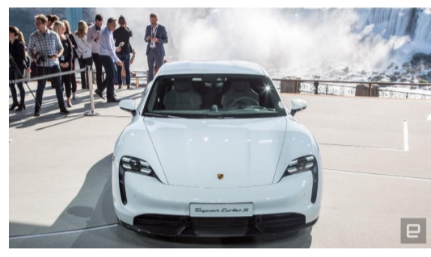

Recently, the high-end EV world has become a Nurburgring arms race with Porsche and Tesla vying for the best lap at the famed circuit. The Taycan set a record and CEO Elon Musk decided that the Model S would best it. From early reports, the Fremont company did just that with a heavily modified vehicle.
Ahead of the Tesla run, I sat down with Porsche's North America CEO, Klaus Zellmer, to talk rivalries, where the Taycan sits in the EV world and the surprising demographics it's gathered from its subscription service.
"Many people are talking about competition and all that. We love competition. We come from the racetrack. The Nurburgring; we love that environment. But first and foremost, we want to present an alternative, carrying the badge Porsche and the brand promise -- to everything that is electric out there right now." Zellmer said.
Apple never showed intentions of racing the Nexus 7 to the bottom in the tablet game, and the iPhone 5c is proof that it won't do that in the phone arena, either.
Infographic by Troy Dunham for Engadget
Kebudayaan Indonesia yang multikultur seperti itu, ketika dikaji dari sisi dimensi waktu, dapat dibagi pula pengertiannya :
Adapun Pengaruh Positif dapat berupa :
| DATA | JANUARI | TOTAL | FEBRUARI | TOTAL | KELUAR | TOTAL | |
| MASUK | MASUK | JANUARI | FEBRUARI | ||||
| TOTAL | |||||||
| FORM INPUT SISWA | ||
|---|---|---|
| Nama | : | |
| Tempat Lahir | : | |
| Jenis Kelamin | : |
Laki-Laki
Perempuan |
| kelas | : | |
| HOBI | : |
Olahraga
Musik
Logik Bahasa |
| Alamat | : | |